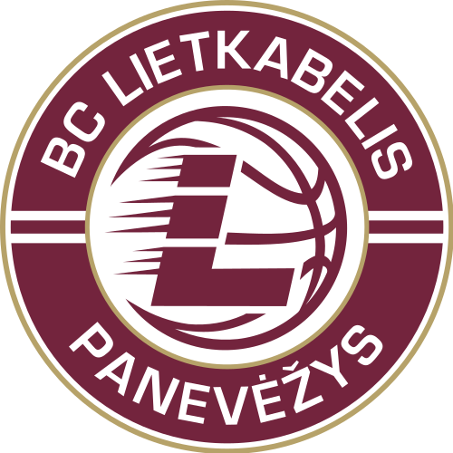

Panevėžio „Lietkabelis“

Įkūrimo data: 1964 metai
Vyr. treneris: Nenad Čanak
Komandos sudėtis:
- Tadas Vaičiūnas
- Nikola Radičevič
- Panagiotis Kalaitzakis
- Karolis Giedraitis
- Vytenis Lipkevičius
- Gabrielius Maldūnas
- Kristupas Žemaitis
- Kaspars Berzins
- Gediminas Orelik
- Grantas Vasiliauskas
- Dovydas Giedraitis
- Dorde Gagič
www.kklietkabelis.lt >
Atgal